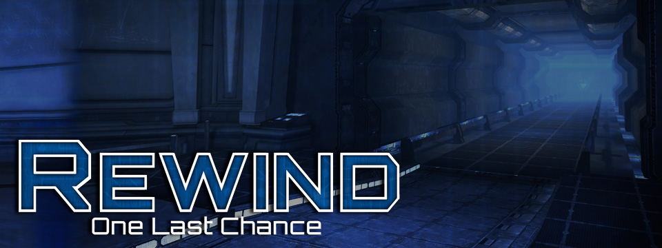

Rewind
Interactive Narrative
2015
Rewind is an interactive narrative that takes the user through the trial of a man named Kole. In this dystopian future, Kole is a commander and he is being tried for crimes against humanity. The user solves puzzles and traverses through the trial room in search for clues on whether Kole is innocent or not. It is soon evident to the user that there is more to this narrative that just a trial.
Roles and Responsibilities
Character Design
I assisted in creating the Inquisitor for Rewind. My task was to concept a young, but strikingly sharp female judge who will be in charge of questioning Kole during his trial. I also concepted other minor characters for the plot, but the direction changed and these were thus unused.


Environment Design
The Challenge: To create 2-dimensional environment assets that match up with our 3D artist's environmental design.
The Solution: I created filters and overlays to edit character portraits, and concepted effects so that both combined can correlate to the monitor models used throughout the game.
In addition, I aided in concepting some of the background assets needed for the environments.
UI Design
The Challenge: To create unobstructive UI, but also create immersive designs to make the puzzles feel associated with the narrative.
The Solution: I designed a very simple interact button to not obscured from the environment. In addition, I devised a concept that combined the puzzles with the inspectable items within the inventory system. This way the gameplay and narrative are blended for more immersion.